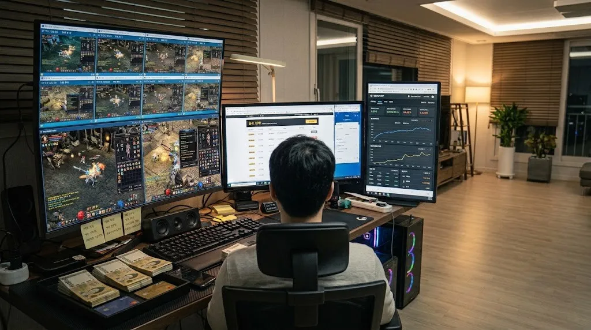

원격 접속 창을 닫아도 원격PC와 게임은 계속 실행됩니다. 공식 자동사냥이 있는 게임이라면 그대로 이어집니다.
쌀먹 × 원격임대
쌀먹용 원격임대 PC
쌀먹은 게임에서 모은 재화나 아이템으로 수익을 내는 플레이를 말해요. 핵심은 얼마나 오래, 몇 계정을 안정적으로 돌리느냐인데, 집 PC로는 전기요금·발열·소음·고장 부담이 큽니다.
원격임대 PC를 빌리면 24시간 켜진 PC에서 게임의 공식 자동사냥과 다계정을 운영하고, 휴대폰으로는 상태만 확인하면 됩니다.
24시간 가동다계정 운영PC 대수 월 단위 조절

집 PC로 돌릴 때 vs 원격PC
| 집 PC | 나노 원격PC | |
|---|---|---|
| 전기요금 | 24시간 상시 가동 시 증가 | 임대료에 포함 |
| 초기 비용 | PC 여러 대 구매 | 필요한 대수만 월 단위로 |
| 고장·관리 | 직접 수리·교체 | 운영사가 관리 |
| 외출 중 | 상태 확인 어려움 | 휴대폰 원격 접속 |
| 대수 조절 | 구매·처분 번거로움 | 문의 후 늘리거나 줄이기 |
쌀먹에 원격PC가 맞는 이유
24시간 접속 유지
대수 단위로 확장
1대로 시작해 수익이 맞으면 1대씩 늘리고, 안 맞으면 줄이면 됩니다. PC를 사고 팔 필요가 없습니다.
게임별 맞춤 옵션
앱플레이어 다계정은 5700G·4350G, 고사양 PC 게임은 외장 그래픽 2600처럼 게임에 맞춰 고릅니다.
휴대폰으로 관리
출근길·외출 중에도 원격 앱으로 물약, 가방, 사망 여부를 확인할 수 있습니다.
쌀먹 추천 임대 옵션
라이젠 5700G
8코어 16쓰레드 · RAM 32GB · 내장 Vega 8
BEST · 다중8코어 16쓰레드 · RAM 32GB · 내장 Vega 8
라이젠 4350G
4코어 8쓰레드 · RAM 24GB · 내장 Vega 6
앱플레이어 다중4코어 8쓰레드 · RAM 24GB · 내장 Vega 6
라이젠 2600
6코어 12쓰레드 · RAM 24GB · 외장 그래픽카드
단독 고사양6코어 12쓰레드 · RAM 24GB · 외장 그래픽카드
앱플레이어로 여러 계정을 돌린다면 RAM 32GB 5700G, 가벼운 게임 1~2계정은 4350G, 고사양 PC 게임은 외장 그래픽 2600이 맞습니다. 어떤 게임으로 몇 계정을 돌릴지 알려주시면 대수와 옵션을 맞춰 드려요.
쌀먹 시작 전 체크리스트
| 게임 약관 | 현금 거래·다계정 허용 여부 — 게임마다 다릅니다 |
|---|---|
| 공식 자동사냥 | 있는지, 시간 제한은 없는지 (예: 바람의나라 하루 4시간, 리니지 클래식 하루 3시간) |
| 다중 클라이언트 | PC 1대에 몇 개까지 허용되는지 (예: 거상 공식 3클라, 메이플스토리 불가) |
| 거래 방식 | 게임 내 공식 거래소 등 정해진 방법으로 거래 |
| 계정 | 본인 명의 계정만 사용 — 명의 도용·외부 자동화 프로그램은 제재 대상 |
게임 규칙과 약관은 수시로 바뀌니 시작 전 공식 공지를 꼭 확인하세요.
쌀먹 원격 임대 자주 묻는 질문
쌀먹이 무슨 뜻인가요?
게임에서 얻은 재화나 아이템으로 수익을 내는 플레이를 부르는 말입니다. 요즘은 무과금으로 성장하며 부수입을 얻는 플레이 전반을 가리키기도 합니다.
원격PC로 쌀먹하면 수익이 보장되나요?
아니요. 수익은 게임 시세와 운영 정책에 따라 크게 달라집니다. 임대료 대비 예상 수익을 먼저 계산하고, 1대로 1~2주 테스트한 뒤 늘리시는 것을 권장합니다.
몇 대부터 시작하는 게 좋나요?
처음에는 1대로 게임과 계정 수를 정해 테스트해 보세요. 수익 구조가 확인되면 같은 옵션으로 대수를 늘리는 것이 가장 안전합니다.
어떤 게임이 쌀먹에 많이 쓰이나요?
외부 자동화 프로그램도 쓸 수 있나요?
지원하지 않습니다. 대부분의 게임에서 외부 자동화 프로그램은 계정 제재 대상입니다. 원격PC는 게임의 공식 기능 범위 안에서 이용해 주세요.
요금은 어떻게 되나요?
4가지 옵션이 있고 3개월 결제 시 할인됩니다. 옵션별 월 요금은 메인 페이지의 임대 옵션에서 확인할 수 있고, 여러 대 이용은 카카오톡으로 문의해 주세요.